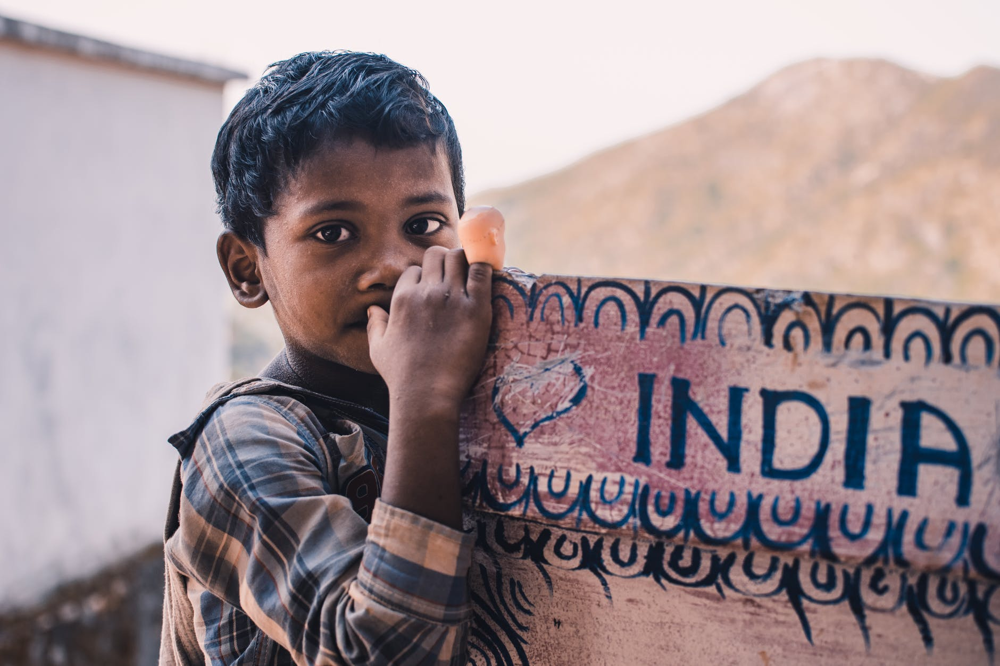
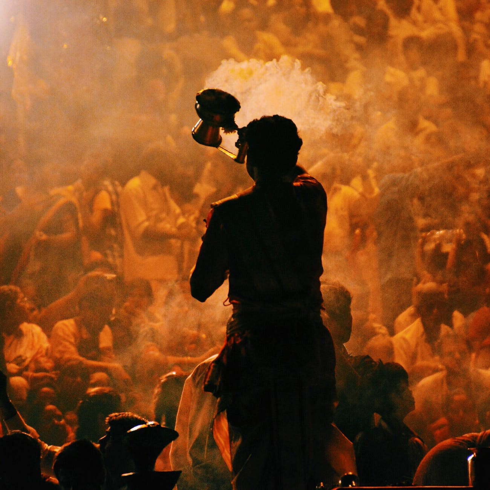
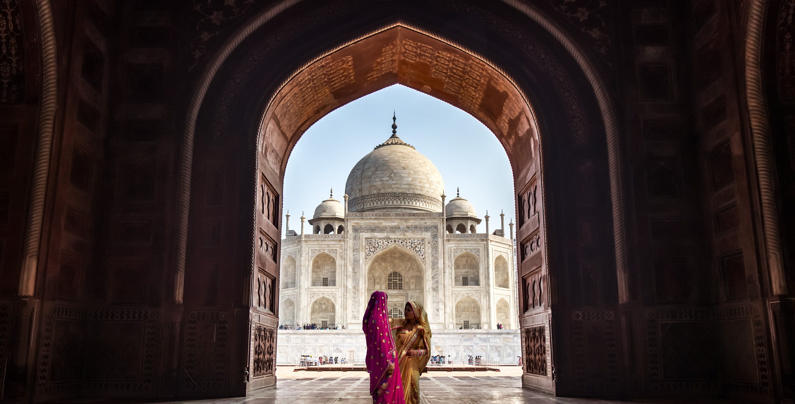
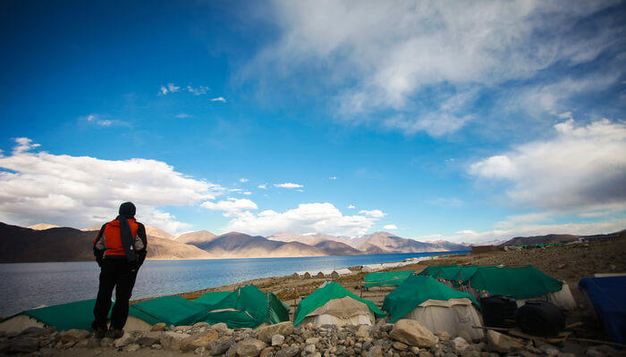
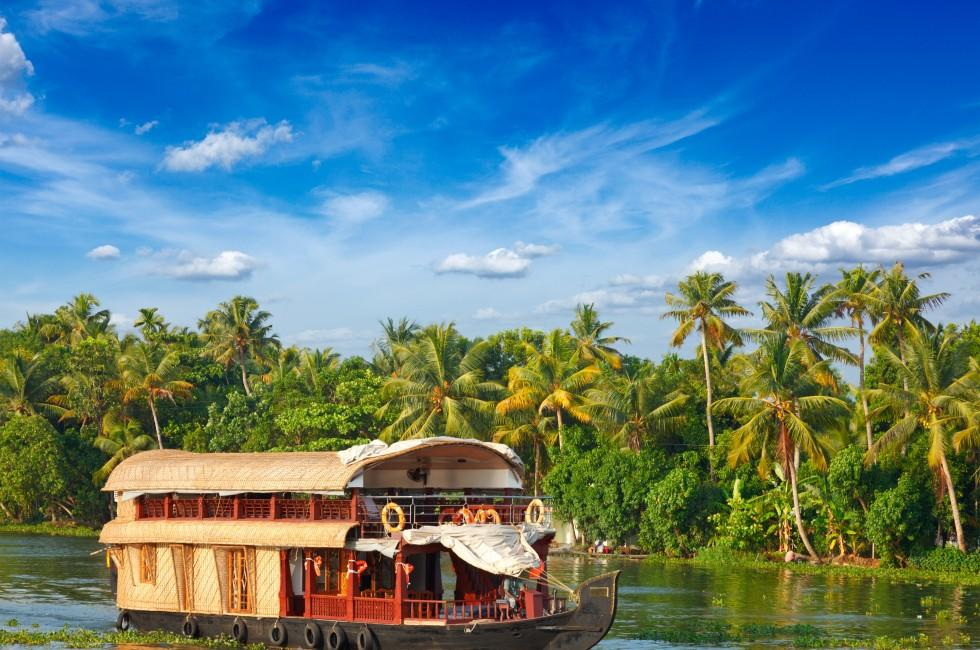

We provide right information to our customers. Everything you need to know in a single place.
Our Dedicated Support
We are just one call away for all your problems. Customer care service 24x7.





Experiences
The Dream Visit
Published by Aishwarya Iyengar
April 20th 2019
I recently visited Taj Mahal to witness it’s beauty in the backdrop of sunset.
The much awaited wonder of the world that I always wanted to visit! I am sure I don’t need to explain the history of this place,
though I got a wonderful guide who was so patriotic about the Taj Mahal as he was a lineage of people who built it.
The way he explained each and every detail was overwhelming and I literally got goosebumps.
Mixed Feelings
Published by Reena Thomas
Jan 30th 2020
Sikkim is a beautiful place. People of Sikkim are simpletons who will love others.
They are law abiding people. They will never cheat you. We will feel agony ,when we go to Nathula and compares the facilities {dress and all}given to Our Soldiers and Chinese Soldiers
we will feel ashamed and will begin to hate the political executive who remembers them during war time alone. You can see Kangchen junga.
They have good botanical garden,beautiful landscapes, buddhist monasteries.clean surroundings, Teesta, lakes etc..I love to visit again
Devoutly Religious
Published by Jhon Mack
May 10th 2019
Varanasi, the oldest town of the world is a legendary pilgrimage where life and death occurs simultaneously.
As the holy water of Ganges is the lifeline of the city, Varanasi rejuvenates the tired souls. Some of the reasons why this old city is still amazing are:
The worship of the waters- Ganga Aarti
Reach the Ashwamedha Ghat by sunset to check out the grand aarti.
The aura of the floating ‘diyas,’ which are the symbols of desires and prayers, create a celestial atmosphere.
You can spend the whole evening resting at the banks of the River Ganges, without feeling lonely or bored.
The fire, puja and dance during the worship of the River Ganges unfold the ancient rituals of Hinduism.
Serenity
Published by Arshad Khare
June 12th 2019
The Omkareshwa & Mamleshwar (They are 2 Jyotirlings) is situated on a very beautiful island (island having the shape of “OM” if you see from a bird eye view) on the shore of Narmada river(Cleanest and purest river of India). Omkarshwar is in Khandwa district of Madhya Pradesh which is about 70 Kilometer from Indore with fabulous connectivity from Indore and Khandwa both. The visiting to Omakareshwar is very beautiful in all season but it is most beautiful in Saavan/Shravan (first month of the rainy season in India) Narmada river in makes it more charming in the rainy season, There are various festivals celebrated across the rainy season the best part is Shri Omkareshwar Nagar Bhraman(There will be total 5 visits on Shri Omkareshwar in the town on each Monday only) and Maa Narmada Chunar festival Program is adventures along with swimming competition and Matki fod (Break) in the mid of the Narmada river. These are the special festivals in Rainy season apart from that Ganga Dashera and all Purnima and Amavasya are among the important days of Shri Omkareshwar.
The island is very beautiful you must do Parikrama(doing complete mapping of Shri Omakeshwar island) while doing parikrama you will find Virat Vishnu Swaroop and Huge Hanuman Ji idol and various beautiful nature and scenery, Omkarshwar Dam in itself is huge and Shandar. You can visit the Newest National park of India i.e. Omkareshwar national park.
You must take a holy bath in the Narmada river. Markateshwar Hanuman Ji and what else. Omakareshwat Ghat, Goumukh Ghat and Nagar Ghat are famous ghat along the Narmada river visit them too.
This was my experience which I told you as information. You visit and experience it yourself, You gonna love it.
About Us
Welcome to Beyond, your number one source for all information. We're dedicated to share travel experiences of people all around the world. With a focus on customer service and uniqueness.
Founded in 2019 by Rimjhim Prasanna, Beyond has come a long way. When Rimjhim first started out, her passion for travelling and writing drove her to quit her job, and gave her the impetus to turn hard work and inspiration into to a booming blog website . We are thrilled to be a part of the travel industry.
We hope you enjoy our service as much as we enjoy offering them to you. If you have any questions or comments, please don't hesitate to contact us.